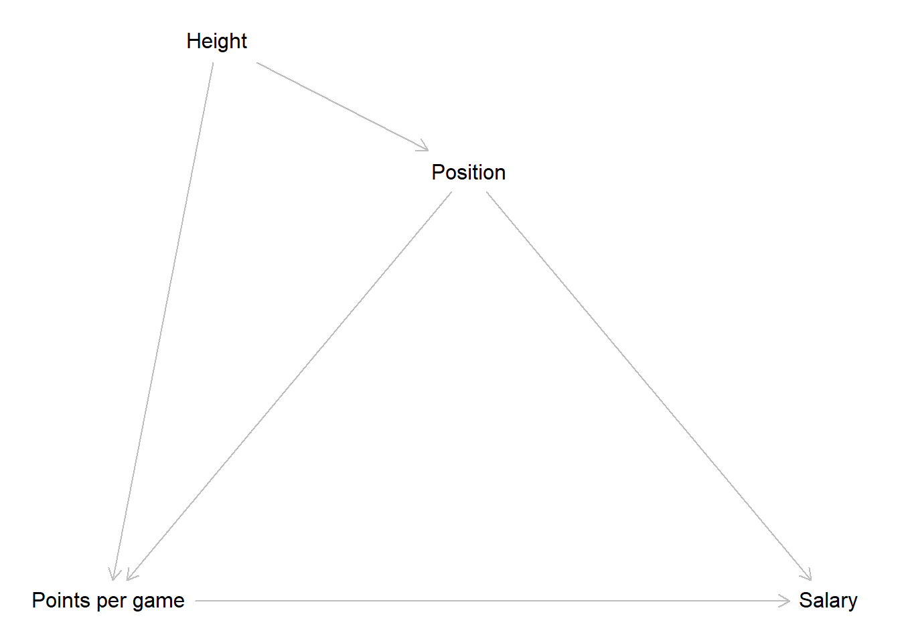

8 Linear Regression - Application
8.3 Temporary from EDA I
This is interesting for a first look. For example, it seems that the weight is strongly correlated with whatever position you play. Centers are heavy, point guards are light weights. We also see that most performance metrics (“career_…”) are correlated with each other and also with salary. Good players seem to be good in many things, and good players seem to be paid more.
Now, that we have a feeling for the whole dataset, we want to explore individual variables. To keep it focused, we want to further explore the question of whether players that score more on average are also paid more.
Maybe roles are clearly divided on the team. Maybe really good passers are highly paid because they give great passes to people who then score. Or maybe teams don’t care about passers and just pay more to people who score more.
So, now, let’s look at salary and average number of points scored by game. Also, we want to know whether point guards (short people who pass a lot) are paid less then other positions (who score more).
So, it seems that point gards are paid a little less even though they make a few more points on average. Interesting puzzle to explore.
Let’s reflect a moment what we can learn from all this.
First, there seems to be a somewhat linear relationship between how many points a player scores and how much they are paid. This relationship seems pretty robust across years and teams. It also holds true for point guards just as much as for non-point guards. However, the average salary for point guards is lower in comparison. We also learn that the link between salary and points is stronger for centers. They seems to be paid more, the more they score.
- It can model the relationship between two variables while considering simultaneously the potential influence of other factors. Image we are interested in the effect of points per game on salary regardless of position, season or team. With regression we can estimate how much more a player would ear every season if he scored 10 more points a game (regardless of the position he plays).
8.4 Research question
We will now pick up where we left several sessions ago and return to the NBA data. We already saw, that there was an interesting relationship between the points a player makes per game and the salary he receives. The more points, the higher the salary. This makes intuitive sense as high scoring player is more valuable to the team and thus receives a higher monetary compensation. Our goal for this session is to estimate the effect of points on salary and to assess if it really exists and what its magnitude is.
Let us start building a DAG with the information we already have.

Now we have to think about other factors that could influence the relationship between points and salary. One variable we already identified as having an effect on both was the position a player occupies. The position influences how many points per game a player can score and we also already saw that centers make more money compared to point guards. Right now we have no reason to believe that other positions do not also have an effect on the received salary. Following this reasoning, position is a confounder for points and salary.

It is also reasonable that the height influences which position a player can occupy. Centers have to be big while smaller players tend to play on other positions. At the same time, height is an advantage if you want to score in a basketball game. Thus height is a confounder for points and position.

Another factor that will have an effect on the salary is the team a player play for. More successful teams will be able to pay higher salaries. The season an observation was recorded in, should also influence the paid salary as we can expect a general inflation of salaries over time.
This is our final DAG. Now what does this imply for our model? Our goal is to measure the effect of the points per game on the received salary. Position is a confounder for both, so we have to control for it to get an unbiased estimate for points. Height is also a confounder, but for points and position. So we have to control for this variable too? As we already control for position, the path from height -> position -> points is already closed. This means that we do not have to onclude height in our model to get a unbiased estimate. The two remaining variables, team and season, have direct effects on salary but no other connections. This implies, that we also do not have to control for them if our goal is estimating the effect of points. Remember, if our goal was predicting the salary as accurately as possible, we should maybe include both variables, but this is not our goal today.
Now let us get to it and load the NBA data we prepared in week 2.
8.5 Simple linear regression in R
To conduct a multiple linear regression in R, we can use the built-in base R
function lm(). The function is straightforward to use. As the first argument
we write the regression formula in R’s formula syntax.
In the formula syntac we start by writing the name of our dependent_variable
followed by a tilde ~. You can read this as an \(=\) or as “regress the
dependent variable on”. After the tilde we add our first indepedent variable
by again writing out its name. If we have multiple independent variables in our
model - so we are running a multiple linear regression - we can add those by
writing a + followed by the name of the variable to be added.
As a second argument, the function needs the name of the object that holds our data.
The goal of our research question is to estimate the effect of the points per
game on the received salary. So to regress salary on career_PTS, we just
write:
##
## Call:
## lm(formula = salary ~ career_PTS, data = data_nba)
##
## Coefficients:
## (Intercept) career_PTS
## -851914 552843This gives us a short output. The first line just echoes our code used to run the regression. We have seen this in the last session already, but now we know what the meaning was. After this we have a short block with the estimated coefficients. As we have run a simple linear regression, we only get the intercept and the coefficient for the sole independent variable used in the model. If we would have run a multiple linear regression, the result would basically look the same, only with more coefficients to display.
Before we dive into the results, we should talk about how to receive a more verbose output that does not hide all the other vital information that is associated with the model.
The easiest way is to use the base R function summary(). This is a generic R
function that returns different summaries, depending on the object it is used
on. We can for example use it on a data frame or tibble to get some descriptive
statistics for the included variables. For example, we can information on the
distribution of points per game by writing:
## Min. 1st Qu. Median Mean 3rd Qu. Max.
## 0.000 5.100 8.000 8.908 12.000 30.100When we use summary() on a model object, like the one created by lm(), we
get a different output. Before we apply this we should save our model in an
object. This is good practice in most cases as we can now apply all additional
analysis of the model on ths object and we do not have to rerun the model
every time.
We can now apply summary() on the object m1, short for “model 1”:
##
## Call:
## lm(formula = salary ~ career_PTS, data = data_nba)
##
## Residuals:
## Min 1Q Median 3Q Max
## -14788659 -2023969 -434599 1311807 24326060
##
## Coefficients:
## Estimate Std. Error t value Pr(>|t|)
## (Intercept) -851915 76417 -11.15 <2e-16 ***
## career_PTS 552843 7453 74.17 <2e-16 ***
## ---
## Signif. codes: 0 '***' 0.001 '**' 0.01 '*' 0.05 '.' 0.1 ' ' 1
##
## Residual standard error: 3732000 on 9726 degrees of freedom
## Multiple R-squared: 0.3613, Adjusted R-squared: 0.3612
## F-statistic: 5502 on 1 and 9726 DF, p-value: < 2.2e-16This is the output we saw over the last weeks and it includes extended and better readable coefficient block as well as the information on the residuals and the model fit.
An alternative method of displaying the coefficients in a regular tibble format,
is to use tidy() from the broom package.
## Warning: package 'broom' was built under R version 4.2.3## # A tibble: 2 × 5
## term estimate std.error statistic p.value
## <chr> <dbl> <dbl> <dbl> <dbl>
## 1 (Intercept) -851914. 76417. -11.1 1.09e-28
## 2 career_PTS 552843. 7453. 74.2 08.5.1 Interpretation
While we know our model is not complete yet, let us still inspect the results.
For each point a player scores per game, his salary rises by about \(550,000\$\).
We see a clear positive and substantial effect. Let us also inspect the
intercept. THis tells us that a player who makes no points per game has to pay
the team about \(850,000\). Wait, this does not make sense…
To make the intercept more readily interpretable we should again center our
metric dependent variable career_PTS on its mean.
## [1] 8.907679As we have now centered the independent variable of interst on its mean of \(8.9\) we can rerun the model.
##
## Call:
## lm(formula = salary ~ PTS_centered, data = data_nba)
##
## Residuals:
## Min 1Q Median 3Q Max
## -14788659 -2023969 -434599 1311807 24326060
##
## Coefficients:
## Estimate Std. Error t value Pr(>|t|)
## (Intercept) 4072633 37840 107.63 <2e-16 ***
## PTS_centered 552843 7453 74.17 <2e-16 ***
## ---
## Signif. codes: 0 '***' 0.001 '**' 0.01 '*' 0.05 '.' 0.1 ' ' 1
##
## Residual standard error: 3732000 on 9726 degrees of freedom
## Multiple R-squared: 0.3613, Adjusted R-squared: 0.3612
## F-statistic: 5502 on 1 and 9726 DF, p-value: < 2.2e-16The coefficient for points per game has not changed but its interpretation has. For each point per game over the mean of \(8.9\) points per game, the salary is estimated to increase by about \(550,000\$\). At the same time, for each point below the mean the salary is estimated to decrease by the same amount. The intercept now shows us the estimated salary of a player who scores \(8.9\) points per game which is slightly upwards of \(4,000,000\$\) This makes way more sense.
This model model already achieved a considerable \(R^2\) of \(0.36\). About \(36\%\) of the variance in salaries is explained by the points per game a player scores.
8.6 Multiple linear regression in R
The DAG we have constructed above based on our research question indicated that
we also have to include the position a player occupies in our model.
We can add additional independent variables to the formula used in lm() with a
+ and the name of the additional variable(s). This works the same way for all
types of variables, i.e. metric, dummies or categorical variables.
So let us do this now by adding the 5 dummies we constructed for the positions:
m2 <- lm(salary ~ PTS_centered + position_center + position_sf + position_pf + position_sg + position_pg, data = data_nba)
summary(m2)##
## Call:
## lm(formula = salary ~ PTS_centered + position_center + position_sf +
## position_pf + position_sg + position_pg, data = data_nba)
##
## Residuals:
## Min 1Q Median 3Q Max
## -14511723 -1950255 -372906 1358768 24433660
##
## Coefficients:
## Estimate Std. Error t value Pr(>|t|)
## (Intercept) 3679728 114300 32.193 < 2e-16 ***
## PTS_centered 568019 7474 75.994 < 2e-16 ***
## position_center 1380246 114539 12.050 < 2e-16 ***
## position_sf 125384 102174 1.227 0.219790
## position_pf 206505 94882 2.176 0.029547 *
## position_sg -331033 96841 -3.418 0.000633 ***
## position_pg -114552 117486 -0.975 0.329572
## ---
## Signif. codes: 0 '***' 0.001 '**' 0.01 '*' 0.05 '.' 0.1 ' ' 1
##
## Residual standard error: 3652000 on 9721 degrees of freedom
## Multiple R-squared: 0.3888, Adjusted R-squared: 0.3884
## F-statistic: 1031 on 6 and 9721 DF, p-value: < 2.2e-168.6.1 Interpretation
We still see a clear positive effect of points per game on the received salary after controlling for the position a player occupies. Among those centers are by far the top earners, making about \(1,400,00\$\) more than players on other positions. Most other positions show relatively small effects on the earnings. Power and small forwards earn somewhat more than other positions on average while point and especially shooting guards earns less.
We can now compare two fictive cases of a center and a point guard who each make about \(20\) points per game. What is the estimated salary for them?
As we have extensively worked with the formulas over the last sessions, we can now keep it short and calculate the estimate directly. Remember that we centered the points per game on the mean of about \(8.9\), so making \(20\) per game would mean making about \(11.1\) than the average player. We will keep it simple here and calculate with \(11\).
\[\hat{y_{center\_20}} = 3679728 + 568019 * 11 + 1380246 = 11,308,183\]
\[\hat{y_{pg\_20}} = 3679728 + 568019 * 11 - 114552 = 9,813,385\]
Despite making the same amount of points per game for their team, the model estimates that a point guard earns about \(1,500,000\$\) less compared to a center.
8.6.2 Sidenote: Adding interactions
We will not use interactions in this session but we briefly want to state how we could add them in the formula syntax.
Remember that interactions are multiplicative terms in our regression formula.
Adding them to the R formula syntax works the same way. We add the new term with
a + and use a * between the two variables that we want to interact.
Here is a non running toy example where we interact two x-variables:
lm(y ~ x1 + x2 + x1 * x2, data = some_data)